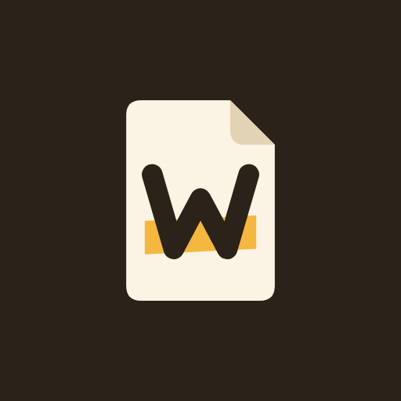

<!doctype html><html lang="en"><meta charset="utf-8"><style>
@font-face{font-family:Serif;src:url(fonts/SourceSerif4-Bold.woff2);font-weight:700}@font-face{font-family:Serif;src:url(fonts/SourceSerif4-Regular.woff2);font-weight:400}*{box-sizing:border-box}body{margin:0;width:1024px;height:500px;overflow:hidden;background:#f8f2e5;color:#2d2419;font-family:Serif;background-image:repeating-linear-gradient(0deg,transparent 0 31px,#e5ddcc88 31px 32px)}main{height:100%;padding:58px 62px;position:relative;border-left:2px solid #e4b1a2;margin-left:36px}header{display:flex;gap:12px;align-items:center;font-size:25px;font-weight:700}header img{width:43px;height:43px;border-radius:10px}h1{font-size:69px;line-height:1.04;letter-spacing:-2px;font-weight:700;margin:38px 0 20px;position:relative;z-index:1}mark{color:inherit;background:linear-gradient(transparent 58%,#ffdc6a 58%,#ffdc6a 91%,transparent 91%);padding:0 6px;margin-left:-6px}p{font-size:23px;margin:0;line-height:1.4}.symbol{position:absolute;right:66px;top:96px;font-size:240px;line-height:1;color:#2d241914;transform:rotate(-9deg)}.check{position:absolute;right:92px;bottom:65px;font-size:81px;color:#75826250}
</style><main><header>Wordkeep</header><div class="symbol">#</div><h1>Every note,<br><mark>a plain file.</mark></h1><p>Markdown notes. Your words, yours to keep.</p><div class="check">[✓]</div></main></html>
